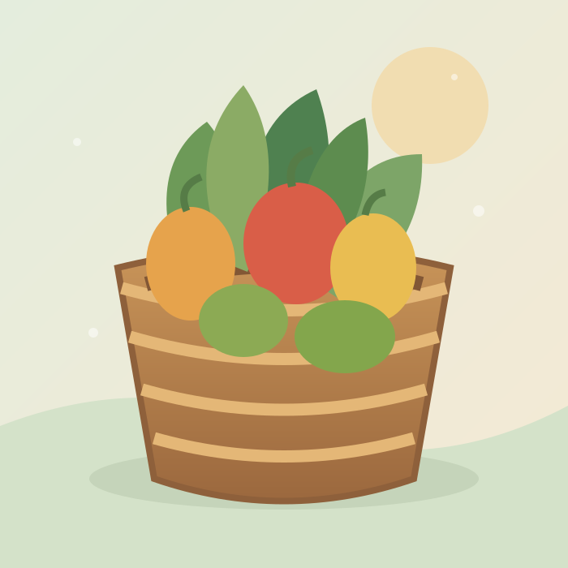

Фермер делится
Публикует продукты, которые готов бесплатно передать.
Помогаем фермерам делиться урожаем, а людям — получать свежие продукты бесплатно. Просто, по-соседски и с заботой.

Три шага, чтобы продукты не пропали зря.
Публикует продукты, которые готов бесплатно передать.
Выбираете подходящие продукты поблизости и бронируете их.
Связываетесь с отдающим и договариваетесь о передаче.
Разместите объявление — и ваши продукты кому-то очень пригодятся.
Стать участником →